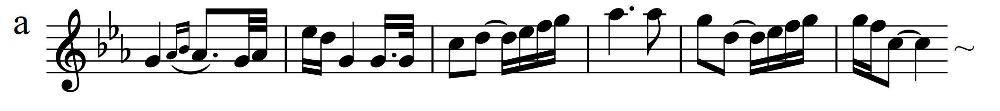
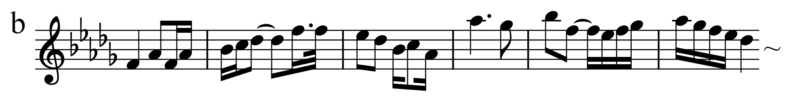
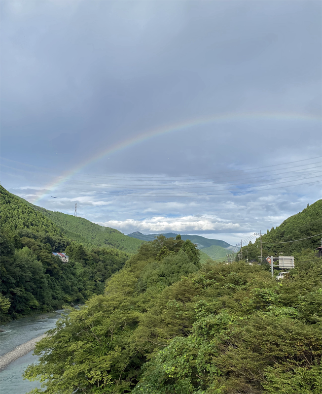

フィンジ: ロマンス（弦楽四重奏版）
原曲は弦楽オーケストラのための小品で、ここではクリスチャン・アレクサンダーという現代の作曲家が弦楽四重奏のために編曲したものが演奏されている。編曲の楽譜がSchottから出版されており、他にKölner Kammersolistenの演奏した音源もあるが、原作作曲者の名を冠したFinzi Quartetの方がやはり思い入れの度合いの違いなのか、自由闊達に曲想を表出できていて圧倒的に優れている。フィンジの曲を検索してランダムに聴いていて出会ったもので、一瞬にして宝物のような存在になった。
Finzi: Romance in E-flat Major, Op. 11
(Arr. C. Alexander for String Quartet)
Finzi Quartet
(2012)
弦楽オーケストラでも美しいのだが、ぼかされた水彩画のような合奏の音色は、このカルテット版に馴染んでしまうとやはり隔靴掻痒の感がある（オケ版では定番のマリナー&ASMFがよい）。原曲は弦五部とはいえ各パートが分奏(divisi)する箇所も多いため4人のパートに収めるのは工夫が必要だっただろうけれども、作為を感じさせず、原曲の良さを何も失うことがないばかりか、透明度の高い響きという贈り物をこの曲に追加してくれている。加えて各奏者の思いというか呼吸がオケ版よりダイレクトに伝わって来る。
この曲は導入部付きABA形式の平穏な小品で、A部、B部の各主題（下記a, b）がそれぞれに展開されていくのだが、b自体aの変形で変二長調に転調しpiu mossoの指示がある。Finzi Q.の演奏では指示に忠実というか十分に速度の対比を行った上でrit.も大胆かつ自然に加えられており印象的である。真中あたりのffの後、オクターブ上でbのテーマが奏され、途中から第2ヴァイオリンがオクターブユニゾンで寄り添う所がこの曲で最も美しいと思う箇所である。


ところでフィンジはロンドンから西に100kmほど離れたAldbourneの地に家を建てて作曲の傍らリンゴの栽培を行ったことで知られているが、これは農園を経営したわけではなく、イギリスでリンゴの希少種が絶滅の危機にあることをラジオでたまたま聞き、その品種保存の意義に共感して希少なリンゴの品種を集め敷地内で栽培したのである。フィンジの名は王立園芸協会(RHS)のジャーナルの記事でも少しだけ触れられている。日本でも戦中に「花作りは国賊」と言われる中、希少園芸植物の品種保存が一部で絶えることなく行われていた話を思い出させる。リンゴの場合は品種ごとの多様な味という価値があるわけだが、食用でなくとも、バラをはじめツツジ、シャクナゲ、モミジ、ギボウシ、アサガオなど園芸家はみな品種にこだわり、多様な品種があることに喜びを見出すのである。フィンジもその一人だったのだろうか。（ただ、園芸家の一般傾向として「雑種」を低く見てしまうのはちょっといただけないが。）
フィンジの小品でもう一つ、『エクローグ』("Eclogue")も有名でフィンジのアルバムによく入っている曲。元は27歳の時に結核を疑われてサセックスのサナトリウムに入院していた折に着手したピアノ協奏曲の緩徐楽章。結核ではなく胸膜炎と診断され退院したのだが、協奏曲はこの楽章までで完成せず、死後にこの題名を付けて出版された。そのピアノとオルガンの編曲版を見つけた。これがとてもはまっていてびっくり。非の打ちどころのない敬虔な祈りの音楽になっている。オルガンだから敬虔というのも単純ではあるが事実なのでしょうがない。なお、このアルバムはメインがヴォーン・ウィリアムズの『ロンドン交響曲(交響曲第2番)』のピアノ連弾版(A. Jacob編曲)で、こちらも変わり種である。原曲の骨格を確認するには良いのだが、正直あの雰囲気を楽しむにはやはりピアノでは困難があることを認識させられるものだった。しかし、音楽も「品種」が多いのが喜びなので、こういうものはどんどん録音してほしい。
Finzi: Eclogue, Op. 10 (Arr. C. Matthews for piano&organ)
Charles Matthews & Lynn Arnold
(2022)

(Nov. 26, 2022)